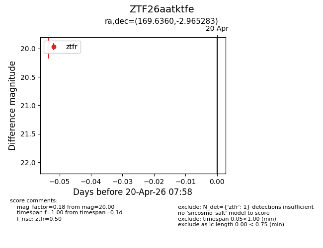
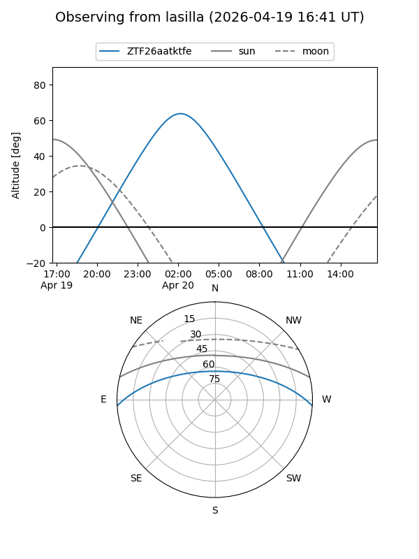
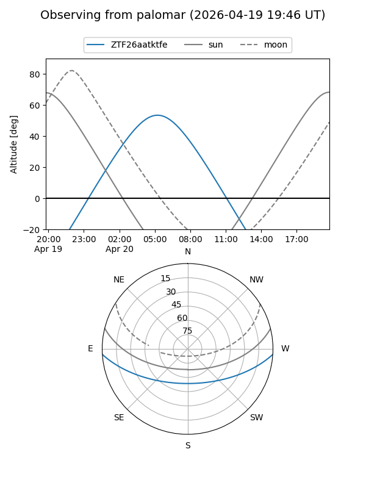
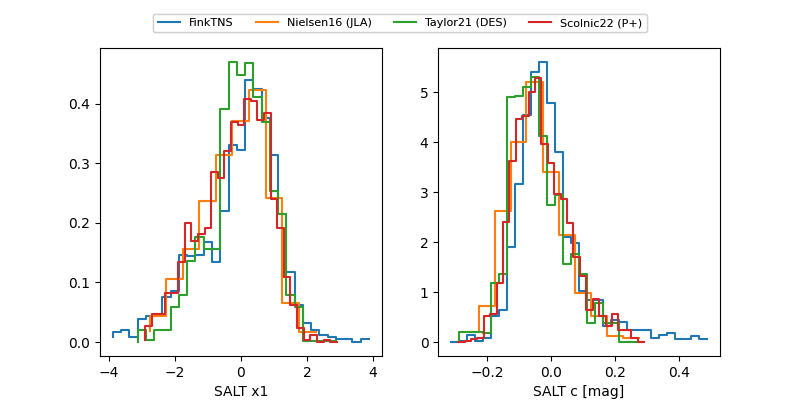

ZTF26aatktfe
Target ZTF26aatktfe at 2026-04-20 08:10
Aliases and brokers:
FINK: link
Lasair: link
ALeRCE: link
alt names
ZTF26aatktfe (ztf,fink_ztf)
Coordinates:
equatorial (ra, dec) = 169.6360,-2.96528
equatorial (HMS+DMS) = 11:18:32.65,-02:57:55.02
galactic (l, b) = (262.6426,+52.48487)
Flags:
Photometry:
last ztfr=20.00
1 ztfr detections
Lightcurve

Visibility


Additional plots
